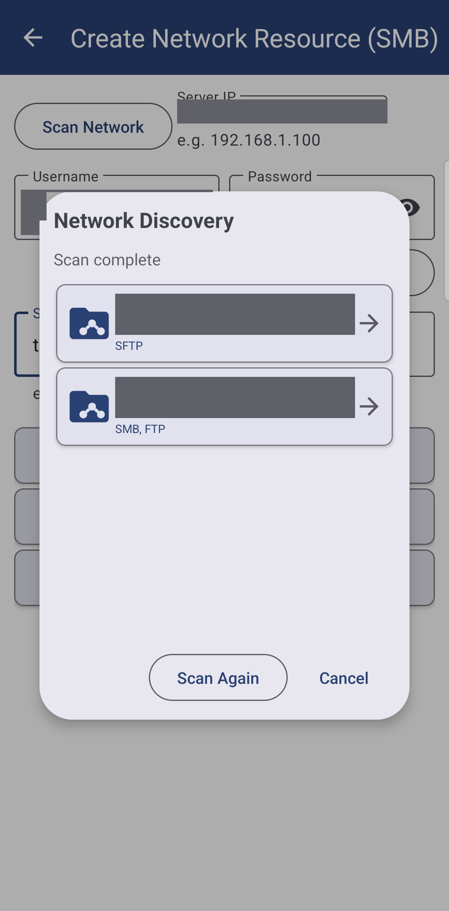
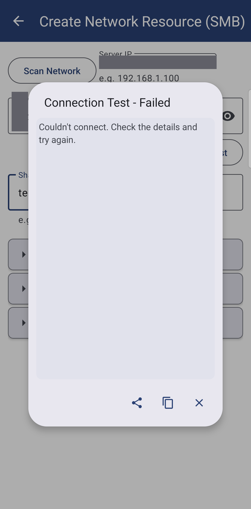

Connecting SMB/Windows Shares
Share a folder on Windows, find it from the app with a network scan, sign in and test the connection before committing, and read what a "cannot connect" message actually means - the full walk-through behind adding a network folder as a resource.
Why You'll Love This
Adding a network folder as a resource takes a few taps when everything lines up: the computer is awake, the password is right, the share name is spelled the way the server expects. This page is for the rest of the time - you are not sure of the computer's address, you typed the share name wrong last time, or the folder that worked yesterday says it cannot connect today.
It also starts one step earlier than the overview: a folder has to be shared on the Windows side before the app can find it at all.
- ✓ FastMediaSorter in any edition except Lite - see The seven editions.
- ✓ A Windows PC or NAS with a folder already shared on it, or a few minutes to share one - step 1 below.
- ✓ The phone and the computer on the same Wi-Fi or network.
- ✓ The user name and password of the shared folder (on a home PC this is usually your own Windows account).
Find your computer and add the shared folder
On the main screen tap Add, then Network Folder - "Add SMB network shares". On the Create Network Resource (SMB) screen tap Scan Network: the app scans your network subnet for SMB, FTP and SFTP hosts while "Scanning local subnet.." shows, then "Scan complete" and a list of the devices it found. Tap yours.
With the Server IP field filled in (or typed by hand, for example 192.168.1.100), enter Username and Password, then tap Scan host. The app lists the shared folders under "Shares on

Or type everything by hand
Scanning needs the phone and computer on the same network segment, and it is not offered in the FOSS edition, where every field is filled in yourself. Either way the fields are the same:
- Server IP - the computer's address, for example
192.168.1.100. - Username and Password of the shared folder, and Domain (optional) only if your network uses one ("Leave empty if not needed").
- Port - leave it at its default (
445) unless you were told otherwise. - ShareName/subfolder - the exact name Windows gave the share, for example
CommonorPhotos. - Resource Name - what the folder is called on your main screen; leave it empty and the app names it for you.
Test the connection before you commit
Test connection checks the address, user name and password without adding anything, and answers in a moment - it does not just say "yes" or "no". A wrong password reports "authentication failed", a wrong or missing share name reports "share not found", and a computer that simply cannot be reached reports a timeout - three different problems, three different fixes, instead of one flat error.
When everything checks out, tap Add This Resource to add it to the list below, or add several shares from the same computer before tapping Add to Resources once for all of them.

Why you never have to tune transfer speed by hand
Right after a network folder is added, the app quietly measures how fast it can read and write to it and picks the number of parallel transfer threads and the buffer size that suit that particular computer - nothing to watch, nothing to tap. A fast NAS on a good connection gets more parallel threads; a slow or congested one gets fewer, so copying does not choke it. You can still set the number of threads by hand in Settings, but there is normally no need to.
When a shared folder cannot be reached
Opening a file from a resource that has gone offline no longer stops you with a raw error. It shows Resource unavailable: "
A share whose name contains a space, for example My Photos, opens and closes cleanly too, the same as one without.
Player screen, file open attempted while the SMB resource is offline, Resource unavailable dialog shown.
How SMB compares to FTP and SFTP, in plain terms
SMB is what Windows and most NAS boxes speak natively - you share a folder, and any computer or phone on the same network can browse it, no server address to remember beyond the computer's own name or IP. It only works on your local network, though: point it at a server on the internet and it will not connect.
FTP and SFTP reach a server by its address instead of a share name, and they work just as well over the internet as on a home network - useful for a server that lives outside your house, or a NAS with FTP turned on instead of SMB. SFTP encrypts everything it sends; plain FTP does not, so use it only where SFTP is not offered. The full walk-through, including signing in with an SSH key, is in Connecting SFTP and FTP servers.
What You Get
The computer or NAS shows up on your main screen the moment you scan for it, a wrong password or a missing share tells you exactly what to fix, transfer speed tunes itself, and a resource that briefly drops off the network says so calmly instead of throwing an error at you.
Tips and Troubleshooting
- Windows asks you to sign in and you are not sure with what. Use the same user name and password you use to log into that Windows PC, not your Microsoft account email, unless you specifically created a separate share user.
- The share works from a computer but not from the phone. Confirm both are on the same Wi-Fi network, not one on Wi-Fi and one on mobile data, and that the PC has not gone to sleep.
- Want the caching and background-refresh details? They are the same for every kind of network resource - see Adding network folders and cloud storage as sources.
- Sharing your whole resource list, passwords included, with another phone? See Sharing and backing up your resources.